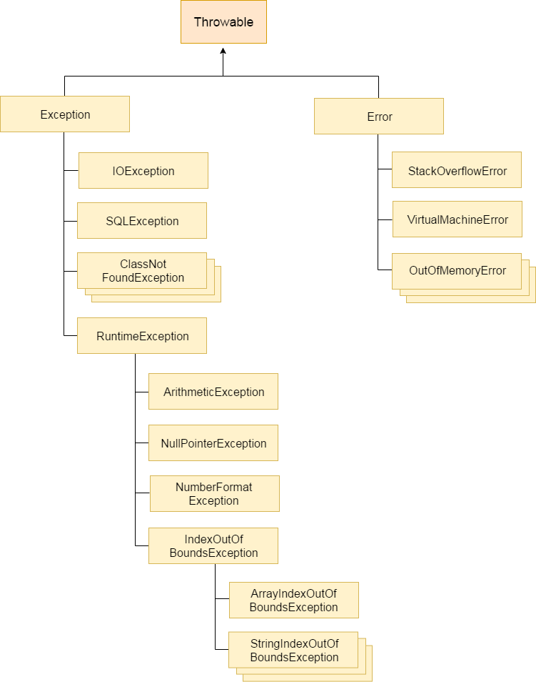

Java Notes(5) Error and Exception Handling
Exception Handling in Java
Exception is an event that disrupts the normal flow of the program. It is an object which is thrown at runtime. The exception handling in java is one of the powerful mechanism to handle the runtime errors so that normal flow of the application can be maintained.
- An Error “indicates serious problems that a reasonable application should not try to catch.”
- An Exception “indicates conditions that a reasonable application might want to catch.”
Hierarchy of the Throwable Class :

Types of Exceptions :
1. Checked Exception - A checked exception is an exception that occurs at the compile time, these are also called as compile time exceptions. These exceptions cannot simply be ignored at the time of compilation, the programmer should take care of (handle) these exceptions. e.g. IOException, SQLException, ClassNotFoundException, CloneNotSupported, etc. Checked exceptions are checked at compile-time.
2. Unchecked Exception - An unchecked exception is an exception that occurs at the time of execution. These are also called as Runtime Exceptions. These include programming bugs, such as logic errors or improper use of an API. e.g. ArithmeticException, NullPointerException, ArrayIndexOutOfBoundsException etc. Unchecked exceptions are not checked at compile-time rather they are checked at runtime.
3. Error - These are not exceptions at all, but problems that arise beyond the control of the user or the programmer. Errors are typically ignored in your code because you can rarely do anything about an error. Suppose, if a stack overflow occurs, an error will arise. e.g. OutOfMemoryError, VirtualMachineError, AssertionError etc.
Exception Example Situations :
ArithmeticException
|
|
NullPointerException
|
|
NumberFormatException
|
|
ArrayIndexOutOfBoundsException
|
|
Java Exception Handling Keywords :
1. try - Java try block is used to enclose the code that might throw an exception. It must be used within the method. Java try block must be followed by either catch or finally block.
2. catch - Java catch block is used to handle the Exception. It must be used after the try block only. You can use multiple catch block with a single try.
3. finally - Java finally block is a block that is used to execute important code such as closing connection, stream etc. Java finally block is always executed whether exception is handled or not. Java finally block follows try or catch block.
4. throw - Java throw keyword is used to explicitly throw an exception. We can throw either checked or uncheked exception in java by throw keyword. The throw keyword is mainly used to throw custom exception.
5. throws - Java throws keyword is used to declare an exception. It gives an information to the programmer that there may occur an exception so it is better for the programmer to provide the exception handling code.
NOTE : Exception Handling is mainly used to handle the checked exceptions. If there occurs any unchecked exception such as NullPointerException, it is programmers fault that he is not performing check up before the code being used.
JVM’s Default Exception Handler
The JVM firstly checks whether the exception is handled or not. If exception is not handled, JVM provides a default exception handler that performs the following tasks:
- Prints out exception description.
- Prints the stack trace (Hierarchy of methods where the exception occurred).
- Causes the program to terminate.
But if exception is handled by the application programmer, normal flow of the application is maintained i.e. rest of the code is executed.
Using Multiple catch blocks
-
If the superclass method declares an exception, subclass overridden method can declare same, subclass exception or no exception but cannot declare parent exception.
-
All catch blocks must be ordered from most specific to most general i.e. catch for ArithmeticException must come before catch for Exception.
Using finally block
-
If you don’t handle exception, before terminating the program, JVM executes finally block(if any).
-
For each try block there can be zero or more catch blocks, but only one finally block.
-
The finally block will not be executed if program exits(either by calling System.exit() or by causing a fatal error that causes the process to abort).
Execution Propagation
An exception is first thrown from the top of the stack and if it is not caught, it drops down the call stack to the previous method,If not caught there, the exception again drops down to the previous method, and so on until they are caught or until they reach the very bottom of the call stack.This is called exception propagation.
-
By default Unchecked Exceptions are forwarded in calling chain (propagated).
-
By default, Checked Exceptions are not forwarded in calling chain (propagated).
Using throws keyword
Only Checked exception should be declared, because Unchecked Exception are under your control (so correct your code) And Errors are beyond your control.
Advantage : By using throws keyword Checked Exception can be propagated (forwarded in call stack). It provides information to the caller of the method about the exception.
If you are calling a method that declares an exception, you must either caught or declare the exception.
- You caught the exception i.e. handle the exception using try/catch.
- the code will be executed fine whether exception occurs during the program or not.
- You declare the exception i.e. specifying throws with the method.
- if exception does not occur, the code will be executed fine.
- if exception occures, an exception will be thrown at runtime because throws does not handle the exception.
You can rethrow and exception by throwing same exception in catch block.
Java throw vs throws Keywords
| No. | throw | throws |
|---|---|---|
| 1) | Java throw keyword is used to explicitly throw an exception. | Java throws keyword is used to declare an exception. |
| 2) | Checked exception cannot be propagated using throw only. | Checked exception can be propagated with throws. |
| 3) | Throw is followed by an instance. | Throws is followed by class. |
| 4) | Throw is used within the method. | Throws is used with the method signature. |
| 5) | You cannot throw multiple exceptions. | You can declare multiple exceptions e.g. public void method()throws IOException,SQLException. |
Java final vs finally vs finalize
| No. | final | finally | finalize |
|---|---|---|---|
| 1) | Final is used to apply restrictions on class, method and variable. Final class can't be inherited, final method can't be overridden and final variable value can't be changed. | Finally is used to place important code, it will be executed whether exception is handled or not. | Finalize is used to perform clean up processing just before object is garbage collected. |
| 2) | Final is a keyword. | Finally is a block. | Finalize is a method. |
Exception Handling with Method Overriding :
-
If the superclass method does not declare an exception, subclass overridden method cannot declare the checked exception but it can declare unchecked exception.
-
If the superclass method declares an exception, subclass overridden method can declare same, subclass exception or no exception but cannot declare parent exception.
Java Custom Exception :
If you are creating your own Exception that is known as custom exception or user-defined exception. Java custom exceptions are used to customize the exception according to user need.
By the help of custom exception, you can have your own exception and message.